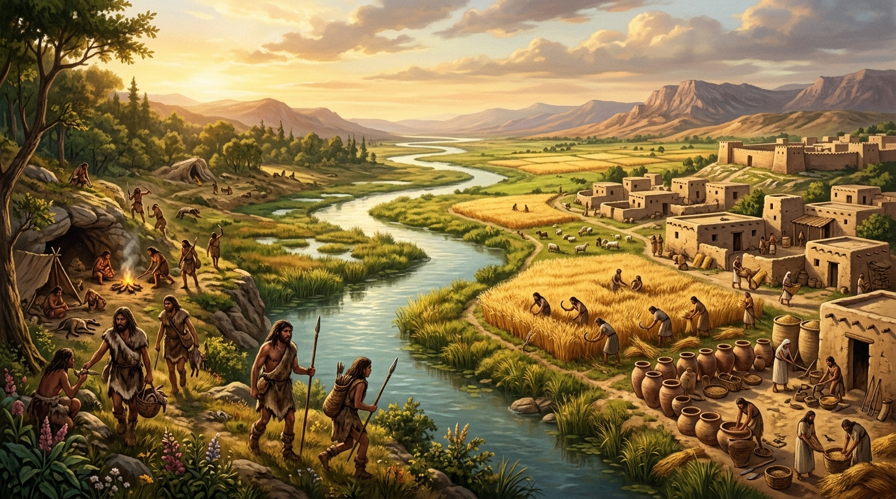
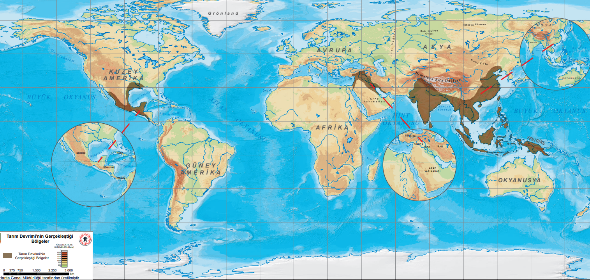

Tarım Devrimi Zaman, Mekân ve İnsan
Toprağın ilk kez işlenmesi ve tohumun evcilleştirilmesi; insanlık tarihini avcı toplayıcılıktan üretici topluma, kalıcı köy mimarisine, artı ürüne ve ilk yazılı kayıtlara taşıdı. Bu etkinlikte; ilk tarım merkezlerini, dönemin aletlerini ve medeniyete uzanan dönüşümü adım adım inceleyeceksiniz.

Harita üzerinde beliren bilgi kartlarını inceleyiniz. İlk olarak üç ana tarım merkezini haritadaki doğru konumlara yerleştiriniz; ardından bu bölgelere ait tarım arazisi, iklim, ürün, yerleşim, iş bölümü ve hayvancılık özelliklerini sürükleyip bırakarak veya karta dokunup hedef alanı seçerek eşleştiriniz.

?
?
?
Videoyu izleyerek Tarım Devrimi'nin toplumsal ve ekonomik etkilerini inceleyiniz; ardından edindiğiniz bilgiler doğrultusunda soruları yanıtlayınız.